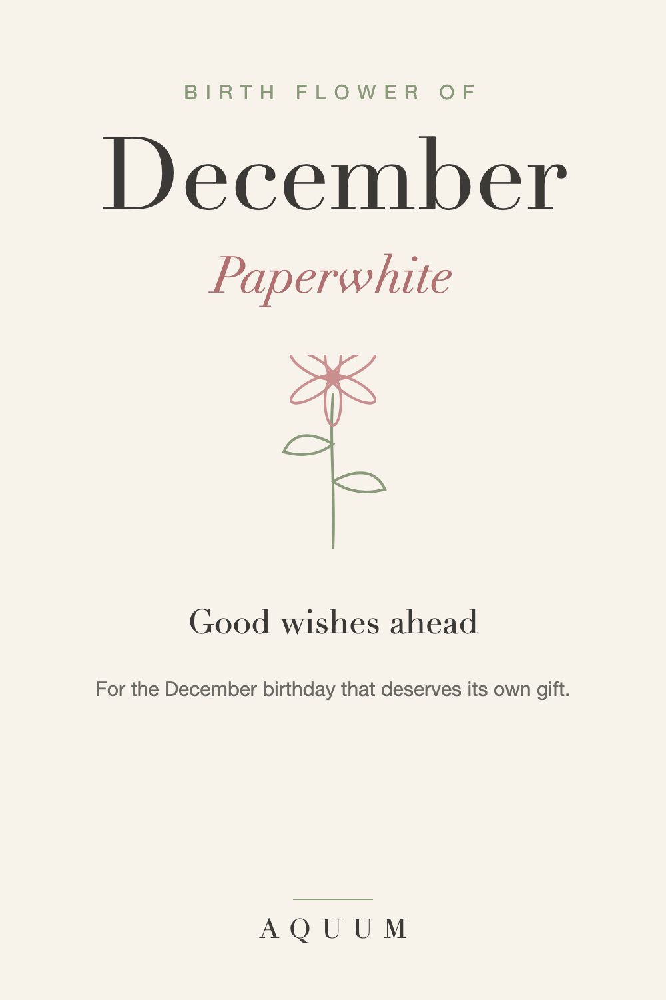

December Birth Flower: Paperwhite Narcissus Meaning and Gift Ideas
2026-09-30
This article may contain affiliate links. How that works.

December has two birth flowers: the narcissus, usually the fragrant white paperwhite, and holly. Both are winter plants, and both show up in holiday decorations, which is exactly why a December birthday gift built around them needs a little care.
What the paperwhite means
The paperwhite narcissus stands for renewal and good wishes for what's ahead. It blooms indoors in the darkest weeks of the year, with small star-shaped white flowers and a scent that fills a room.
What holly means
Holly represents protection and good cheer. It's the more festive of the two, and the one people already associate with Christmas.
The December birthday problem
Anyone born in December knows it: gifts that are "for your birthday and Christmas," a birthday dinner squeezed between holiday plans, a cake that somehow turns into a yule log.
A birth flower gift is a simple way to say: this one is only for your birthday.
That's why the paperwhite is often the better choice over holly. Holly reads as Christmas; the paperwhite reads as them.
Who the paperwhite suits
- Anyone whose birthday always gets folded into the holidays
- Someone starting a new chapter in the new year
- A December baby's parent, as a keepsake
December birth flower gift ideas
- A paperwhite shirt, mug or tote, wrapped in birthday paper, not holiday paper.
- Paperwhite bulbs to force indoors: they bloom in four to six weeks, right into January.
- A card that says what the flower means, and that it's a birthday gift, full stop.